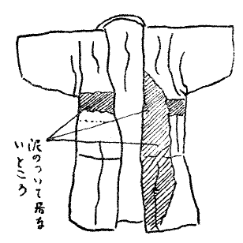

| 頭蓋骨の秘密 | |
| 小酒井 不木 | |
| (2012) | |
頭蓋骨の秘密
小酒井不木
実験室の前の庭にある桐の若葉が、ようやく出そろった五月なかばのある朝。塚原俊夫君が「Ｐのおじさん」と呼ぶ警視庁の小田刑事は、珍しくも私服を着て、私たちの事務室兼実験室を訪ねられました。小田さんは東京に近い△△県の田舎の生まれだそうですが、その村の小田さんの親戚の家
に一つの事件が発生したので、俊夫君にその解決を依頼すべく来られたのです。
今日からちょうど五日前、△△県××村の付近の山奥で、先年関東の大地震の際、山崩れのあったところを、二人の農夫が掘りかえしていると、一本の松の木の根元から、以外にも、十二三の少年の死体があらわれました。死んでからよほど日数がたっていると見えて、単衣
に包まれた身体
も、学校帽子をそばに置いた頭も、ほとんど骨ばかりで、どこの誰とも分かりませんでした。
二人の農夫はびっくりして、転ぶように走って、Ｆ町の警察署に事の次第を急報しましたので、警察署からは直ちに三人の警官が取り調べのため、現場
に駆けつけました。
掘りだされた死体は紺絣
が単衣の筒袖で、黒い兵児帯
をまとい、頭の部分には手拭
いが巻きついていて、それが後ろの方で結んでありました。頭のそばに落ちていた学校帽子の徽章は、まごう方なく××村の小学校のそれであって、懐にある蟇口
の中はからっぽであり、下駄には「草野」という焼印が捺
されてありました。
その山は××村からＦ町へ行く途中にありますが、死体の発見されたところは平素めったに人が行かぬところだそうです。でも、噂を聞いた村人は、われ先にと集まってきて、程なく死んだ少年は、村の相当の資産家なる草野ふさ方の長男草野富三であると分かりました。ことに母親が来て着物も下駄も何もかも富三のものだと申しましたので、顔はもとより分かりませんでしたが、もはや疑う余地はなくなりました。
話は大正十二年八月三十日に遡
ります。死んだ少年草野富三は、同級（尋常六年生）の少年津田栄吉と、各々
、家の金五十円ほどずつを持ちだして行方不明になりました。二人は学校の教師も持てあましたくらいの不良少年でして、今までよく家をあけることもありましたが、こんなに大金を盗みだしたのは稀であるのと、二人がＦ町の方へ連れ立ってゆくのを見たという者があるのと、富三が東京行の汽車に乗るのを見たという者があったので、両家では、翌日一日じゅう待っていよいよ帰らぬことが分かると、それぞれ使者を出して、九月一日の朝東京の心当たりの先を訪ねさせることにしたのであります。
すると、あの大地震です。二人の少年を捜しに出た人々も、少年たちも、もろともに焼死したと見えて、そのまま帰ってきませんでしたので、みんな東京の土となったものと思いこんでおりました。
ところが東京へ行ったはずの富三が、こうして山奥に死んでいるところを見ると、もう一人の少年栄吉もいっしょに山崩れの下敷きになったかもしれない、こう考えて、村の人々は、力を合わせて付近を掘りかえしましたが、栄吉の死体はどうしても見つかりませんでした。
富三はなぜ一人でこんな山奥へ来たか、警官はまず二人の少年がＦ町へ連れ立ってゆくのを見たという者を呼んで、よく尋ねてみますと、何しろ一年半以上にもなったところですから、その返事は曖昧
で、ことによると、二人は別々に家の金を盗んで出たのかもしれないということになりました。
そこで警官は、さらに考えを進めて、蟇口
の中がからであるということと、首に手拭
いが巻かれてあるということからして、富三は、盗人のために山奥に連れられ絞め殺されて、五十円の金を奪いとられたのであろうと推定しました。
しかしその盗人が誰であるか、もとより分かろうはずはありませんけれど、何とかして犯人を捕らえたいと思った警官は、富三の家庭の事情を聞くなり、富三の母親に向かって恐ろしい嫌疑をかけたのであります。
というのは、富三は母親ふさの継子
であって、富三の腹ちがいの弟に、家の財産を譲りたいために（父親は数年前に亡くなりました）富三を山奥に連れていって殺し、栄吉が金を持って逃げだしたと聞いて、富三も金を持ちだしたように言いふらしたにちがいない、と推定したのであります。
ですから、警官は富三の継母
ふさを警察署へ拘引してきびしく尋問しました。その結果、どうでしょう、継母ふさは、富三を殺したことを白状したそうであります。
小田刑事はこの継母ふさの従兄妹
に当たるそうですから、継母に会って話した結果、ふさは絶対に富三を殺したのではなく、義理のために白状したのだと信じて自分で取り調べようかとも思われたのですが、職掌
上面白くないから、俊夫君に事件の捜査を依頼に来られたのであります。
「承知いたしました。面白そうな事件ですね」
と、俊夫君は、小田さんの話を聞き終わって、快く申しました。
「何よりもまずその死体を見なければなりません。これからすぐ出かけますから、どうか案内してください」
間もなく私たち三人は汽車に乗ってＦ町へ来ました。警察署へ入ると、小田さんは、
「俊夫君、おふささんに会ってくれるか？」
と申しました。
「いいえ、まず、死体を検
べさせてもらいましょう。その都合で必要があったらお目にかかりましょう」
と俊夫君は答えました。
死体は別室に置かれてありました。見るもあわれな、黒みがかった骸骨でありまして、帽子衣服などの付属品はそのそばにならべてありました。俊夫君はまず、頭蓋骨を取りあげて、しばらくいじくり回した後、小田さんに向かって、富三君の写真があったら借りてきてくださいと言いました。
小田さんが出てゆくと、俊夫君は、骸骨のそばに置かれてあった付属品を取り調べにかかりました。いずれも破れかけ腐りかけたものばかりでしたから、俊夫君はいかにも大事そうに取り扱い、まず帽子を取りあげて、頭蓋骨にかぶせると、ちょうどぴったりはまって、少し小さいくらいでありました。
俊夫君は何思ったか、にっこり笑って、帽子をかぶせたまま頭蓋骨をわきへ置き、次に破れかけた絣
の単衣
を検査しました。すると何か不審なことでもあるのか、しばらく、首を傾けて考えておりましたが、やがて手帳を出して次に示してあるような図を描き、さらに、図に示すように「泥のついて居ないところ」という文字を書きこみました。

それから、俊夫君は下駄や、蟇口
や兵児帯
を綿密に検
べましたが、別に変わったところも無いと見えて、手帳には何も書きこみませんでした。
かれこれするうち、小田さんは富三の写真を持って帰ってきました。見ると、それは、手札形
のはっきりした半身像で、帽子はかぶっていませんでしたが、なんとなく狡滑
そうな顔をしておりました。俊夫君は、しばらく写真を見つめ、さらに帽子をかぶせてあった頭蓋骨を取りあげて見比べ、次いで帽子を取ってじっと、眺め合わせておりましたが、やがて小田さんに向かい、
「Ｐのおじさん、僕ちょっと検べたいことがあるから、この頭蓋骨を一週間ばかり、貸してもらうよう交渉してください」
と申しました。
小田さんはすぐ交渉に行ってくれましたが、長いこと帰ってきませんでした。
「兄さん、田舎の警察は物分かりが悪いのだねえ。これじゃ、本当の探偵なんかできやしないよ」
と俊夫君は私に向かって、憤慨して言いました。
やっと二時間も待ってからようやく小田さんが顔を出し、
「とうとう説き伏せて借りることにしたよ」
と申しました。小田さんはさらに言葉を続けて、
「俊夫君、おふささんに会ってくれるか」
と尋ねました。
「今日は会わなくってもよろしい。それよりも栄吉君の家
へ行ってお母さんに会ってきましょう」
栄吉には兄弟が五人あって、やはりお父さんはなく、お母さんは実母でしたが、栄吉が不良少年になったのも、富三のおかげであるとて、たいへん富三を恨み大金を持ちだしたのも、富三にそそのかされたのだと腹を立てておりました。
そうして、富三がああした横着ものになったのも、みんなあの継母
が悪いからだ。あの継母は鬼だ、だから富三を殺して、とうとう天罰を受けるようになったのだと、小田さんがおふささんの親戚だということも知らずに、私たちに向かって、さんざんおふささんのことを罵りました。俊夫君は黙って聞いておりましたが、急に意地悪そうな目つきをして、
「栄吉さんは富三さんといっしょに家出したというんですか？」
「そうですとも、そそのかされたんですよ」
「もしそうだとすると、富三さんの殺されたことを栄吉さんは見ているはずです」
「そんなこと分かるものですか」
と栄吉の母は答えました。
「分かってますよ。富三さんが、殺されて栄吉さんがそのそばにいたとすれば、殺したのは......」
と俊夫君が皆まで言わぬうちに、先方はその意味を察したと見えて、眼をむいて驚きました。
「まあ、この子はずうずうしい。よくもそんな......」
こういってぷい
と奥へ入っていってしまいました。
実は俊夫君は栄吉の写真を借りるつもりで来たのですが、母親を怒らせてしまったので、駄目になってしまいました。
東京へ帰る汽車の中で俊夫君は小田さんに言いました。
「Ｐのおじさん、東京へ帰ったらすぐ新聞記者をよんで、明日の新聞にこう書かしてください。××村の事件は、塚原俊夫君の取り調べの結果、継母が犯人でないという見込みがつき、俊夫君はその見込みを確かめるために、頭蓋骨に肉付けすることにした。頭蓋骨の肉付けは、日本では初めての試みであるが、俊夫君のことだから、きっと見事に成功するだろう。その結果、殺された少年の顔が分かるはずだが、もし富三でなかったら、事件は意外な方面に発展するかもしれない、と」
これまで俊夫君は一度も自慢したことがないのに、今日に限って自慢するとは、どうしたわけでしょう。また、殺されたのは、富三でなくて他人なのでしょうか？
千葉県××郡の山奥で掘りだされた他殺死体の頭蓋骨に、俊夫君が肉付けをするということが、新聞に仰々しく紹介されると、満都の人々は、非常な興味と期待とをもってその結果を待ち構え、中に気の早い人たちは、私たちの事務室を訪ねて、肉付けの模様を見せてくれとさえ言ってきましたが、俊夫君はいっさい断ったばかりか、製作室の中へは私をさえも近づけないで、自分ひとりで仕事を始めました。
ここで私は、頭蓋骨の肉付けということを一応皆さんにお話しておこうと思います。頭蓋骨の肉付けと申しても、人間の肉をつけることではなく、一口にいうと、頭蓋骨の表面に一定の物質を塗りつけて、生きていた時の顔を作りだすことであります。
それには通常、彫刻などに使用される「プラスチリン」を塗るのがいちばん便利であると言われております。頭蓋骨を見ただけでは生前どんな顔をした人かは分かりませんが、肉付けをして、その人の顔を知った人に見せれば、すぐ誰それであるということが分かるから便利であります。
この頭蓋骨の肉付けということはけっして容易な業
ではありませんが、従来、西洋で肉付けに成功した人は稀ではありません。今から三十年ほど前ドイツのライプチヒ市の某教会の墓地から、音楽家バッハの遺骨が掘りだされたとき、バッハの骨が他の人々の骨とまじり合っていましたので、頭蓋骨に肉付けして判定することになり、解剖学者のヒス教授がその任に当たりましたが、教授は彫刻家のゼフネルを指導して肉付けをさせましたところ、バッハ生前の肖像に酷似した像ができあがったのであります。
あまりによく似ているので、人々は、ゼフネルが、多分ひそかにバッハの肖像画を見て、それを参考にして作ったのだろうと噂したくらいです。もちろん写真や肖像画があれば、時として頭蓋骨などなくても立派に塑像
を作ることができますけれど、肖像画や写真が無くとも、頭蓋骨さえあれば、立派に生前どおりの顔を作ることができるのであります。
現に先年ニューヨークで、ある男の他殺死体が地中より掘りだされたとき、何の誰とも分からなかったので、ウィリアムズという警察の探偵が頭蓋骨の肉付けに成功して、その男の身元が分かり、ついに犯人をも探しだすことができたのであります。
さて、俊夫君は、かねて、これらのことを書物で読んでおりまして、自分でも、実際の事件に当たって、頭蓋骨の肉付けをしてみたいと思っていたところですから、俊夫君は非常に喜び、大いに勇んで仕事に取りかかりました。
写真を見て、その写真どおりの顔を作ることはこれまで度々練習していましたが、頭蓋骨の肉付けをするのは今度が初めてで、しかも、俊夫君の肉付けが、事件の解決に重大な関係を持っているのですから、俊夫君は、大いに自重しなければなりません。
俊夫君の持ち帰った頭蓋骨は果たして草野富三でありましょうか。私は俊夫君の探偵ぶりを見たとき、俊夫君は富三の頭蓋骨でないと思っているなと推察しました。もし富三の頭蓋骨でないとすれば、犯人嫌疑者として捕らえられた富三の継母
は直ちに放免されますが、すると、殺されたのは誰でしょうか。富三といっしょに行方不明になった津田栄吉でしょうか。しかし、死体の着物や帽子や下駄はみんな富三のものですから、もし殺されたのが津田栄吉であるとすると、一体それは何を意味するのでしょうか。
いずれにしても待たれるものは俊夫君の肉付けの結果です。幸いに俊夫君は富三の写真を手に入れておりますから、肉付けの結果、富三であるか無いかはすぐ分かるはずであります。
俊夫君は、田舎から帰った翌日から寝室の隣に設けられてある製作室で何人
をも近づけずに、終日仕事を致しました。石膏やプラスチリンはかねてたくさん買い入れてありましたから、仕事には何の不自由もなく、食事の時などは手にベッタリ白いものをつけたなり出てきて、食事が済むなり、すぐ製作室に入ってゆきました。
私はただ一人事務室に残され、かなりに退屈を感じましたが、うっかり製作室へ入っていっては、どんなに怒られるか知れないので、じっと辛抱しておりました。Ｐのおじさんすなわち警視庁の小田刑事も待ち兼ねられたと見えて、度々電話で肉付けの模様を尋ねてこられましたけれど、私はただ「もう少しお待ちください」と返事するよりほかありませんでした。
俊夫君が製作室へこもってから二日目の夜のことです。俊夫君は、昼間の疲労でぐっすり寝入りましたが、私は一日じゅう為すこともなく暮らしましたため、熟睡することができませんでした。でも十二時少し過ぎに、やっと寝ついて、うとうとしたかと思うと、ふと、私は製作室の中でコトリという音がしたのに眼をさましました。
しばらく耳を澄ましておりますと、どうも、鼠ではないようですから、むくりと起き上がって、しのび足で製作室の扉
の方へ近よってゆきますと、やがて、製作室の中の音はやんで、その代わりに、地面を走ってゆくような、どさどさという足音が聞こえました。私ははっ
と思って、俊夫君を揺り起こしました。
「俊夫君、起きたまえ、製作室へ誰か入ったようだ！」
俊夫君はがばと起き上がり、すぐさま鍵を持ってきて、製作室の扉をあけ、入口に備えてあるスイッチをひねると、製作室はぱっと明るくなりましたが、中は綺麗に片づいていて、どこにも頭蓋骨らしいものは置いてありませんでした。が隅の方のガラス窓が一枚切り破られておるのを見て、私はびっくりしました。と、その時、俊夫君は、
「やッ、盗られてしまった！」
と叫びました。
「何を！」
「頭蓋骨！」
「そりゃ大変だ！」
こう言って私が俊夫君の顔を見ますと、俊夫君はいっこう残念がりもせず、やがて、切られた窓のところへ駆けよって懐中電灯で地面を照らしましたが、別に足跡などはありませんでした。しばらくの間、俊夫君は方々を検査しておりましたが、
「とうとうやってきたな！」
「えっ？」
私はびっくりしました。
「来るなら、今夜あたりだと思った！」
「誰が？」
と私はますます面食らいました。
「泥棒がさ！」
こう言って俊夫君はにやりと笑って床に装置してある秘密の箱を開いて、中から問題の頭蓋骨を取りだしました。
「なーんだ、盗られやせぬじゃないか？」
と私は胸を撫で下ろしました。
「いや盗られたよ。しかし、盗られたのはこの替え玉だ！ 僕はこの頭蓋骨の型を取って石膏で同じものを作り、それをこの机の上に出しておいたのだ。泥棒はそれを本当の頭蓋骨だと思って盗っていったんだよ。石膏と本物とを間違えるくらいの泥棒だから、兄さんにもたいてい見当がつくだろう？」
しかし私には少しも見当がつきませんでした。その泥棒はいったい何のために頭蓋骨を盗みにきたのか。しかも、俊夫君はこれを予知していたようにも見える。
「もう、他に盗まれたものはないか」
しばらくして私は尋ねました。
「頭蓋骨が目当てなんだから、他のものは盗ってゆかぬよ」
「君はそれを知っていたのか？」
「そうだ、実は泥棒を呼び寄せたんだ」
「え？ どうして？」
「どうしてって、兄さん、分かってるはずじゃないか。新聞にあのように大袈裟に書いてもらったのは、この泥棒を呼び寄せるつもりだったよ」
「何のために呼び寄せたのだい？」
俊夫君はずるそうに笑って、
「実は、泥棒が来るか来ぬかをためしただけだ！」
この泥棒は果たして何者でしょうか。
読者諸君は、定めし俊夫君の「肉付け」の結果を早く知りたく思われましょう？ ことに私は同じ家
に住まいながら、俊夫君の製作室へ入ってゆくことができぬのですから、随分じれったく思いました。
ちょうど、製作室へ泥棒が入って、偽物と知らず、頭蓋骨を盗みだしていった翌々日の午前、俊夫君は、用ができたからといって、私に留守番をさせ、一人で外出しましたが、およそ三時間ほどして帰りました。
「兄さん、いいものを見せよう」
こう言って取りだしたのは、四つの義眼
と一箱の短く切った頭髪でした。
「何にするんだい？」
「これで眼と頭の毛をこしらえるんだ。義眼は銀座で買い、頭の毛は角の床屋で貰った」
「すると生きたとおりの顔にするのか？」
「そうだ、よく呉服屋の飾窓
に並べてある蠟鈿工の人形のようにするんだ」
「しかし、義眼は四つもいらぬだろう？」
俊夫君は狡猾
な笑いを浮かべて言いました。
「このうちからよくあうのを選ぶんだよ」
「で、いつできあがるんだい」
「今日の四時頃！」
「え、本当か？」
「そうとも、だから兄さん、Ｐのおじさんに四時にここへ来てくださるよう電話をかけてくれ」
Ｐのおじさん、すなわち小田刑事は三時半に訪ねてこられました。俊夫君の製作の終わるのを待つ間、小田さんと私とは今回の事件について語りあいました。私が先夜、盗賊が入ったこと、俊夫君がそれを予期していたことなどを告げると小田さんは驚かれました。
「どうでしょう。僕はあの頭蓋骨が、草野富三のではあるまいと思いますが？」
と、私は尋ねました。
「僕もそう思っているのです。いや、そう希望している」
と、小田さんは、従兄妹
に当たる富三の継母
の心中を思って、眼をうるおして答えられました。
と、そのとき製作室の扉
があいて俊夫君が呼びました。
「兄さん、いよいよできあがったから、Ｐのおじさんといっしょに、こちらへ来てくれ」
私たちは胸を躍らせながら、製作室へ入ってゆきました。中央の机の上には一個の男の子の首が置かれてありました。私たちは思わず近寄りました。近寄って私は、はっ
と立ちすくみました。
「ヤッ、富三だッ！」
と小田さんは叫びました。いかにもそれは写真で見た富三の顔と寸分も違わぬものでした。首はあたかも生きているかのようでしたから、私は顔をそむけました。
小田さんの驚きは私よりも遥かに大きいようでした。それもそのはず、死骸が富三であれば、富三を殺したと白状した継母
のおふささんは、もはや救う余地がありません。小田さんはしばらく呆然として立っておられました。
その心中を察したのでしょう。俊夫君は小田さんを製作室から引っ張りだして、耳に口を寄せて長い間、何やら囁
きました。すると小田さんは、初めてにっこりして、さもさも安心したというような顔になりました。
「Ｐのおじさん、この首は明日から、神田の藤屋のデパートの飾窓
に出して一般に見せることにしてください。そうしてそのことを新聞に書かせてください。それから明日は、富三と栄吉のお母さんを二人とも警視庁へ呼んできておいてください」
こう言ってから、俊夫君は私たちを退かせ、間もなく首が二つもはいる程の大きな木箱を持ってきて小田さんに渡すと、小田さんは勇ましい歩調で去りました。
あくる朝の新聞には、俊夫君が日本で初めて肉付けに成功したこと、肉付けの結果、死体が富三であること、および、肉付けの首が、午前九時から藤屋デパートに陳列されることなどが、報ぜられてありました。
私たちも九時までに藤屋デパートへ行くべく準備しました。
「兄さん、今日は一働きしてもらうよ」
「何だい？」
「このあいだの夜、ここへ来た泥棒を捕まえるのさ」
「え？ 泥棒？ どこにいる？」
「今日、藤屋デパートへ来るはずだよ」
私はびっくりしていろいろ尋ねましたが、意地の悪い俊夫君はそれ以上話しませんでした。
私たちが藤屋デパートへ行くと、店の中も前も群衆でいっぱいでした。店の中へ入ると私服の小田さんが出てきて、特別の室
へ導いてくれました。すなわちその室のカーテンの陰に立つと、群衆の顔がよく見える仕掛けになっているのでした。
「俊夫君、富三と栄吉の二人の母はさっき警視庁へ連れてきたよ」
と小田さんは言いました。
「それは有り難う」
そこへ小田さんの輩下の、私服刑事が二人入ってきて、小田さんと打ち合わせをして出てゆきました。
やがて九時になったので藤屋の店員の手で、飾窓
に富三の首が据えつけられました。人々はそのそばに置かれた富三の写真と見比べて驚嘆の声を発しました。私たちはカーテンの陰から群衆の顔を眺めました。私は泥棒がどんな顔をしているか早く見たくてなりませんでしたが、俊夫君はいっこう教えてくれません。ちょうど時計が十時半になった時、俊夫君は、
「やっ、来た！」
と言って隅の方を指さしました。そこには紺絣
を着て鳥打ち帽をかぶった十二三の小僧が、一生懸命肉付けの首を見つめていましたが、私はその顔を見てぎょっ
としました。というのは、その顔が、中の肉付けの首と寸分も違わなかったからです。
「それッ」という小田さんの下知
とともに、私たちが店の先にかけだすと、既に小僧は、さっきの二人の刑事によって捕らえられておりました。
その小僧を二人の刑事にまかせて、小田さんと私たち二人は、一足先に警視庁へ来ました。母親二人は一室に待っておりましたが、栄吉の母は俊夫君の姿を見るなり、面
をふくらませました。
富三の母、すなわちおふささんには、私たちは初めて対面しました。私は一目見てこんなやさしい人に、どうして人殺しができようと思いました。母親二人とも富三の首が藤屋のデパートで一般の観覧に供せられていることは知りませんでした。
「Ｐのおじさん、あれ
を持ってきてください」
と俊夫君は小田さんに申しました。
やがて小田刑事は、例の木箱を持ってきました。俊夫君は、母親二人を呼び寄せて、言いました。
「山の中から掘りだされた髑髏
に肉をつけたのです。富三君は違うようですから、誰の顔か判断してください」
こう言って木箱の蓋をあけ、中から一つの首を取りだしました。
「栄吉ッ」
と叫んで栄吉の母親は、思わずもその首を抱きあげました。
「山の中で死んでいたのは栄吉君です！」
と俊夫君が厳かに言いますと栄吉の母は、わッ
と声をあげてその場に泣き伏しました。
富三の母おふささんはぼんやりしてその場に立ちすくみました。と、そこへ、どやどや足音がして、さっきの二人の刑事が、藤屋の前で逮捕した小僧をつれて入ってきました。
「あッ、富ちゃん、お前生きていたのか？」
こう叫んでおふささんが駆け寄ろうとしますと、二人の刑事はそれを遮りました。富三はさすがに恥ずかしいと見えて、首を垂れ、眼をつむっておりました。
富三の白状したところによりますと、富三と栄吉とは大正十二年八月三十日に各々
家
の金を五十円ずつ持って東京さして出かけましたが、腹の悪い富三は栄吉の五十円を奪う目的で、甘言をもって、めったに人の行かぬ山奥へ栄吉を誘い込み、大胆にも栄吉を絞殺して、金を奪い、顔の皮膚を傷つけて誰だかわからぬようにし、自分の服装と栄吉のとを交換し、自分が殺されたように見せかけて東京へ来たのであります。
それから彼は二日後の大震災も無事で過ごしましたが、その後悪い仲間に誘われて、本職
の泥棒になってしまったのです。
ところが先日、山奥から死骸が掘りだされ、俊夫君が肉付けをするということが新聞に出たので、自分の罪がばれると大変だと思って、頭蓋骨を盗みにきたのですが、俊夫君にだまされて偽物をつかんだので、少なからず心配しておりますと、今日の新聞に肉付けの結果が富三だと出たので、大いに安心して見にきたところを、ついに捕らえられてしまったのです。
富三が逮捕された翌日、小田刑事は俊夫君に礼に来られました。
「はじめて、僕が頭蓋骨に帽子をかぶせたとき、帽子が小さすぎるのに不審を抱いたのです」
と、俊夫君は語りました。
「肉がくさり落ちて骨ばかりになれば、帽子がすこすこになるのが当たり前です。それから、死骸と衣服
を見ると、泥のついていない部分が、左側にあるので、衣服が左前に着せてあったことが分かります。衣服を左前に着ているということは、子供の手で着せたと考えてしかるべきですから、これは富三が栄吉を殺して、自分が殺されたように見せかけたに違いないと僕は思ったのです。
そこで、富三がもし生きていれば、どうせ悪い仲間に入っているに違いないから、誘
きだせるだろうと思って、新聞に大袈裟に書いてもらったところ、果たして頭蓋骨を盗みにきました。
富三が生きていると分かった以上、どうしても捕らえねばならんと思ったので、僕は富三の写真を見て、あの首を作ったのです。それから、本物の頭蓋骨に肉をつけてみると、富三とは違った顔でしたが、栄吉かどうかは僕にも分からんので、栄吉の母に来てもらったのです......」
かくて、この難事件は俊夫君によって解決され、富三の継母 おふささんはもちろん放免されました。そうして、藤屋デパートにはさらに栄吉の首が陳列されて、一般の観覧に供せられることになりました。
底本：「小酒井不木探偵小説選 〔論創ミステリ叢書8
〕」論創社
２００４（平成16
）年7
月25
日初版第1
刷発行
初出：「子供の科学 二巻一〇～一二号」
１９２５（大正14
）年10
～12
月号
入力：川山隆
校正：門田裕志
２０１０年8
月12
日作成
２０１１年4
月30
日修正
青空文庫作成ファイル：
このファイルは、インターネットの図書館、青空文庫（http://www.aozora.gr.jp/）で作られました。入力、校正、制作にあたったのは、ボランティアの皆さんです。